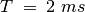
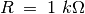
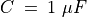
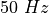

Différenciation et intégration RC¶
Objectif
Les circuits RC peuvent intégrer ou différencier un signal de tension par rapport au temps. Si on intègre un signal carré on obtient un signal triangulaire et si on différencie on obtient des pics aux transitions.


Procédure
- Sélectionner l’option signal triangulaire pour WG
- Régler WG à 500 Hz (),  et 
- Ajuster l’échelle horizontale pour voir plus de quatre cycles.
- Recommencer la même chose pour le différenciateur RC, à .
Discussion
L’intégration d’un signal triangulaire donne une forme parabolique et la différenciation donne une forme carrée. La différenciation ne peut être montrée qu’à basse fréquence. Essayer cela pour d’autres formes de signaux, par exemple signal carré. Si on intègre un signal carré on est censé obtenir un signal triangulaire.